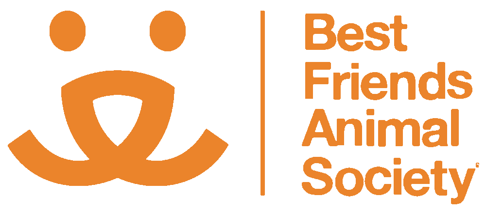
Best Friends Animal Society Network
Second Leash is a Best Friends Network Partner, connecting us with national animal-welfare resources, learning opportunities, and a community committed to lifesaving.
Visit Best Friends NetworkStronger together
Second Leash depends on collaboration. These organizations and businesses help us strengthen the safety net for dogs and the people who love them.
Network and community partners

Second Leash is a Best Friends Network Partner, connecting us with national animal-welfare resources, learning opportunities, and a community committed to lifesaving.
Visit Best Friends Network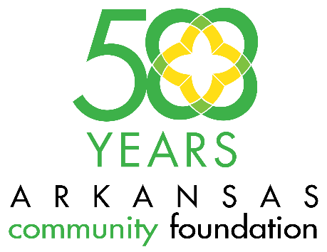
The Community Foundation is a 501c3 nonprofit organization working statewide that offers tools to help Arkansans protect, grow and direct charitable dollars while learning more about community needs.
Visit WCCF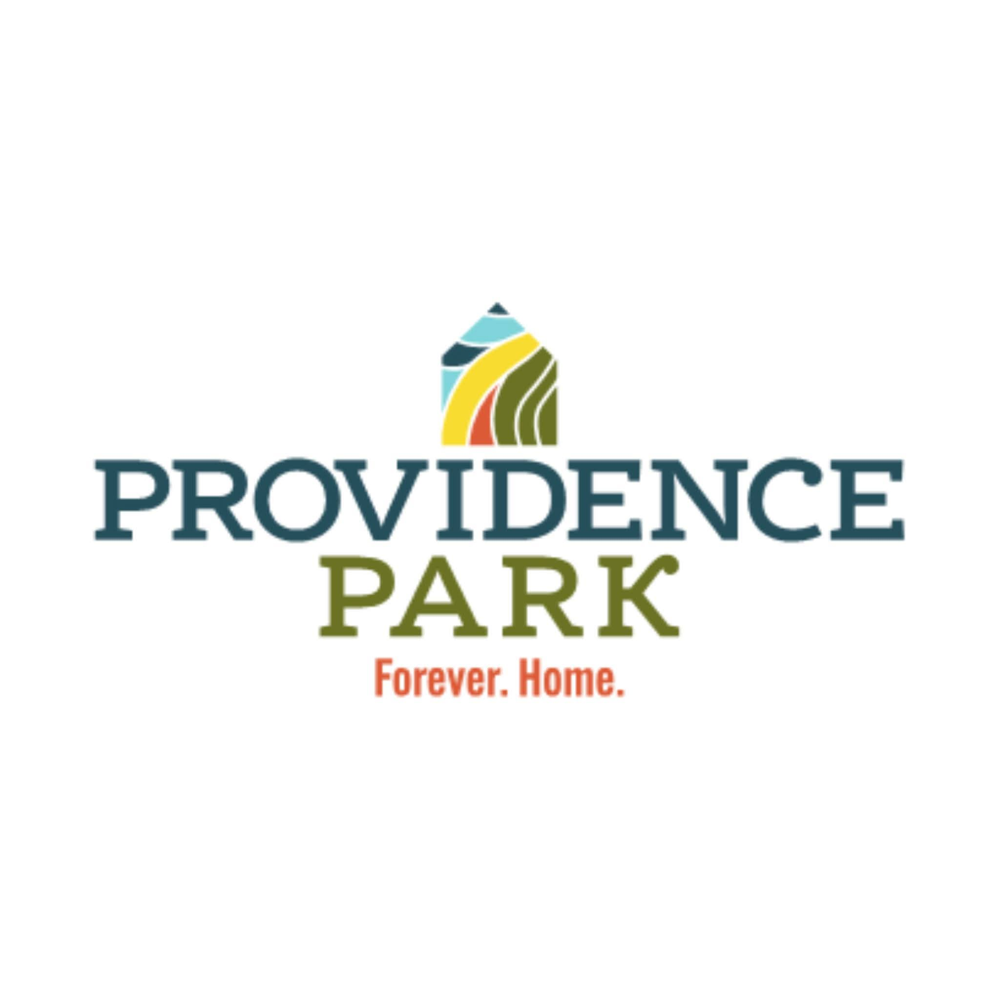
A community connection supporting people experiencing housing instability and other complex life challenges.
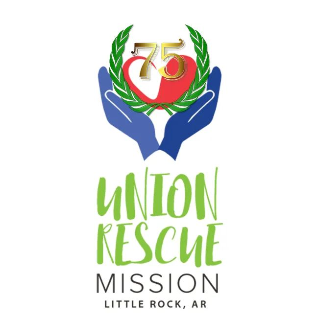
A Little Rock nonprofit serving people in crisis through shelter, recovery, and supportive programs.
Visit Union Rescue MissionIn-kind and fundraising supporters
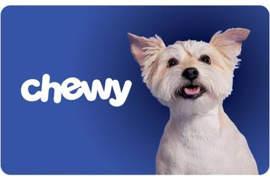
Raffle and product support.
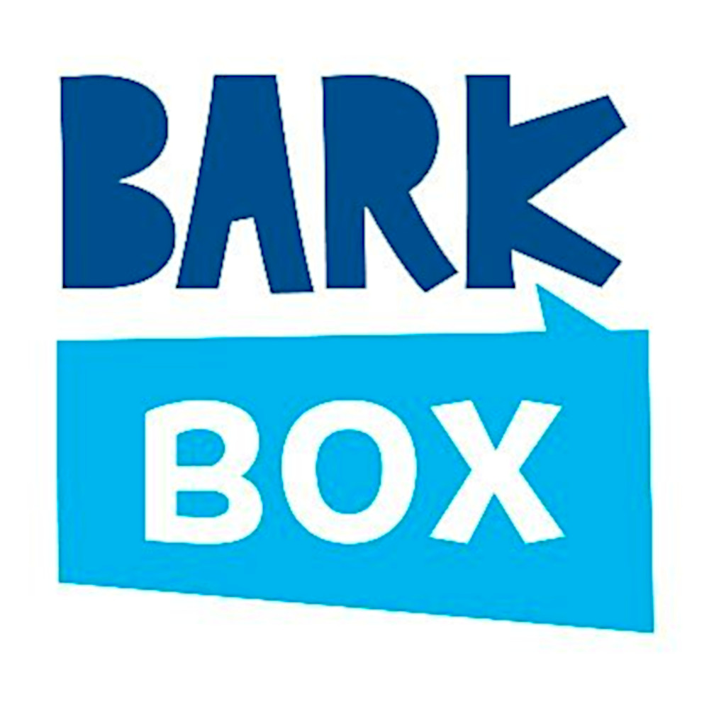
Dog toys for fundraising support.
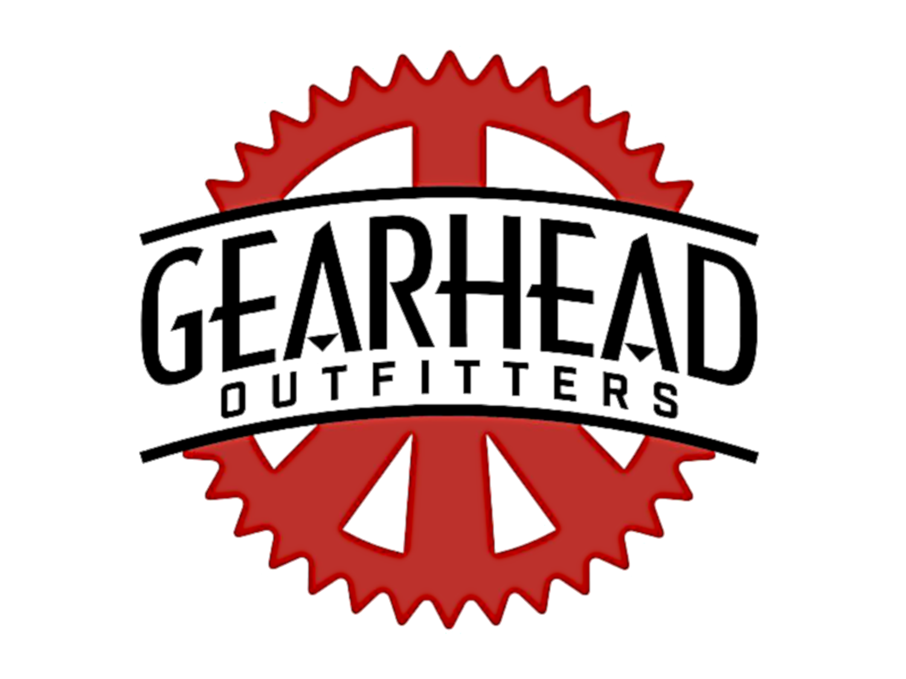
Gift-card support.
Gift-certificate support.
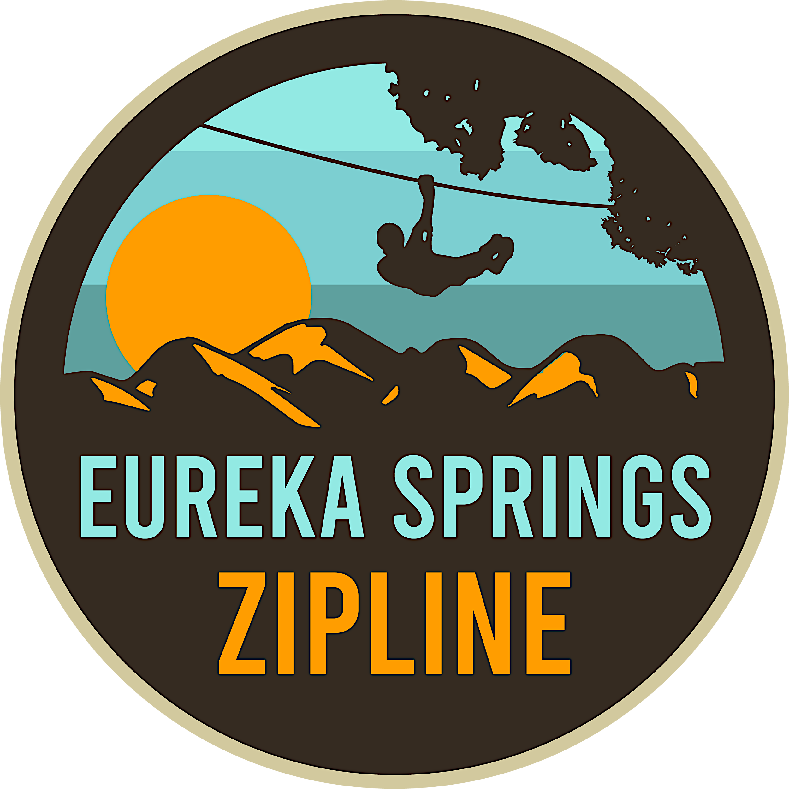
Admission tickets for fundraising support.
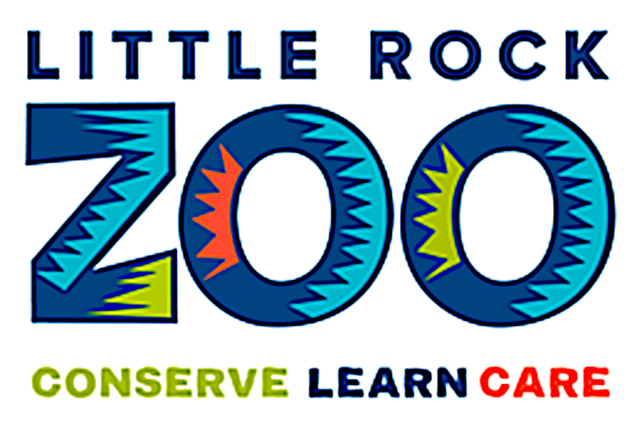
Admission tickets for fundraising support.
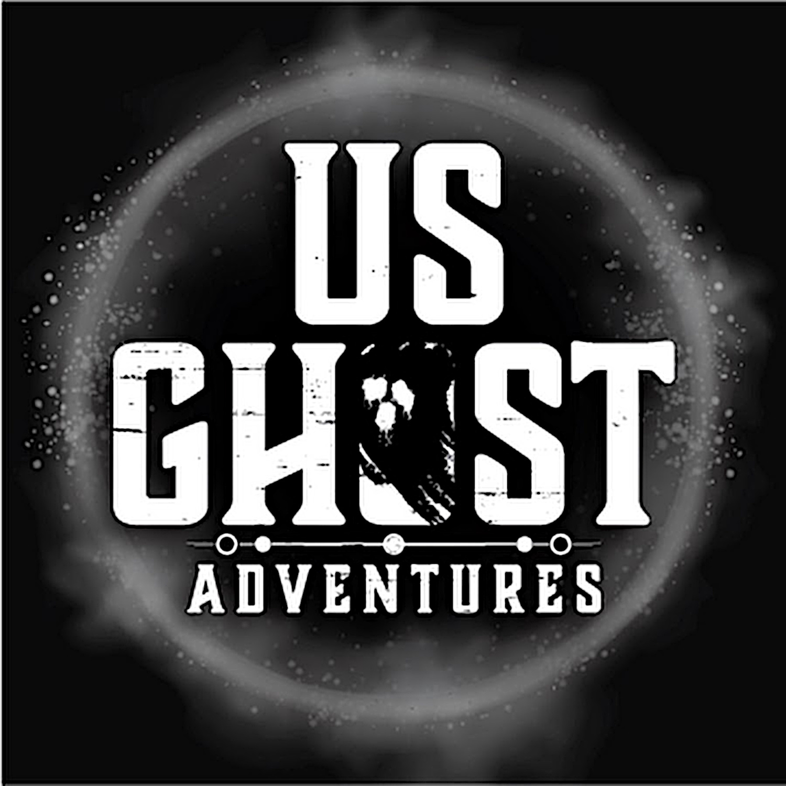
Admission tickets for fundraising support.
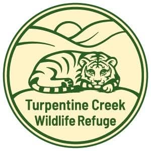
Admission tickets and promotional support.
Recognition does not imply that a business or organization endorses every activity or statement of Second Leash. Add partner logos only after confirming permission and using approved brand files.
Partner with Second Leash